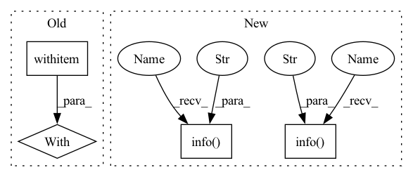

Pattern ID :7263
Before Change
preprocessed_deprioritize_text = embedding_model.preprocess(deprioritize_text)
embedding_deprioritize = embedding_model.embed(preprocessed_deprioritize_text)
with timer ("sentences_conditioning"):
restricted_sentence_ids = filter_sentences(connection,
has_journal=has_journal,
date_range=date_range,
exclusion_text=exclusion_text)After Change
"Stronger": (0.5, 0.7),
}
// now: maximize L = a1 * cos(x, query) - a2 * cos(x, exclusions)
logger.info("Combining query and deprioritizations" )
alpha_1, alpha_2 = deprioritizations[deprioritize_strength]
similarities = alpha_1 * similarities_query - alpha_2 * similarities_deprio
with timer("sorting"):
logger.info(f"Sorting the similarities and getting the top {k} results" )
top_indices = np.argsort(-similarities)[:k]
logger.info("run_search finished")
In pattern: SUPERPATTERN
Frequency: 3
Non-data size: 4
Instances Fragment ID: 24306546
Project Name: bluebrain/search
Commit Name: 6dbc2fe8f01adb39650da97fb8473111884cd0c1
Time: 2020-08-04
Author: francesco.casalegno@gmail.com
File Name: src/bbsearch/search.py
M Class Name: AnonimousClass
N Class Name: AnonimousClass
M Method Name: run_search(12)
N Method Name: run_search(12)
M Parent Class:
N Parent Class:
M File Name: src/bbsearch/search.py
N File Name: src/bbsearch/search.py
M Start Line: 210
M End Line: 221
N Start Line: 170
N End Line: 241
Before Change
preprocessed_deprioritize_text = embedding_model.preprocess(deprioritize_text)
embedding_deprioritize = embedding_model.embed(preprocessed_deprioritize_text)
with timer ("sentences_conditioning"):
restricted_sentence_ids = filter_sentences(connection,
has_journal=has_journal,
date_range=date_range,
exclusion_text=exclusion_text)After Change
- "deprioritize_embed_time" - how much time it took to embed the `deprioritize_text` in seconds
-
logger.info("Starting run_search" )
// Replace empty `deprioritize_text` by None
if deprioritize_text is not None and len(deprioritize_text.strip()) == 0:
deprioritize_text = None
timer = Timer(verbose=verbose)
with timer("query_embed"):
logger.info("Embedding the query text")
preprocessed_query_text = embedding_model.preprocess(query_text)
embedding_query = embedding_model.embed(preprocessed_query_text)
if deprioritize_text is not None:
with timer("deprioritize_embed"):
logger.info("Embedding the deprioritization text")
preprocessed_deprioritize_text = embedding_model.preprocess(deprioritize_text)
embedding_deprioritize = embedding_model.embed(preprocessed_deprioritize_text)
with timer("sentences_filtering"):
logger.info("Applying sentence filtering")
restricted_sentence_ids = (
SentenceFilter(connection)
.only_with_journal(has_journal)
.restrict_sentences_ids_to(indices)
.date_range(date_range)
.exclude_strings(exclusion_text.split())
.run()
)
with timer("considered_embeddings_lookup"):
logger.info("Constructing mask based on indices and sentence filtering")
mask = np.isin(indices, restricted_sentence_ids)
logger.info("Applying the mask")
embeddings_corpus = precomputed_embeddings[mask]
sentence_ids = indices[mask]
if len(sentence_ids) == 0:
return np.array([]), np.array([]), timer.stats
// Compute similarities
with timer("query_similarity"):
logger.info("Computing cosine similarities for the query text")
similarities_query = cosine_similarity(X=embedding_query[None, :],
Y=embeddings_corpus).squeeze()
if deprioritize_text is not None:
with timer("deprioritize_similarity"):
logger.info("Computing cosine similarity for the deprioritization text")
similarities_deprio = cosine_similarity(X=embedding_deprioritize[None, :],
Y=embeddings_corpus).squeeze()
else:
similarities_deprio = np.zeros_like(similarities_query)
deprioritizations = {
"None": (1, 0),
"Weak": (0.9, 0.1),
"Mild": (0.8, 0.3),
"Strong": (0.5, 0.5),
"Stronger": (0.5, 0.7),
}
// now: maximize L = a1 * cos(x, query) - a2 * cos(x, exclusions)
logger.info("Combining query and deprioritizations")
alpha_1, alpha_2 = deprioritizations[deprioritize_strength]
similarities = alpha_1 * similarities_query - alpha_2 * similarities_deprio
with timer("sorting"):
logger.info(f"Sorting the similarities and getting the top {k} results")
top_indices = np.argsort(-similarities)[:k]
logger.info("run_search finished" )
return sentence_ids[top_indices], similarities[top_indices], timer.stats
Fragment ID: 24306547
Project Name: bluebrain/search
Commit Name: 6dbc2fe8f01adb39650da97fb8473111884cd0c1
Time: 2020-08-04
Author: francesco.casalegno@gmail.com
File Name: src/bbsearch/search.py
M Class Name: AnonimousClass
N Class Name: AnonimousClass
M Method Name: run_search(12)
N Method Name: run_search(12)
M Parent Class:
N Parent Class:
M File Name: src/bbsearch/search.py
N File Name: src/bbsearch/search.py
M Start Line: 210
M End Line: 221
N Start Line: 170
N End Line: 241
Before Change
logger.info(f"training batches: {len(train_dataloader)}, val batches: {len(val_dataloader)}, "
f"test batches: {len(test_dataloader)}", ranks=[0])
with ColoInitContext (device=get_current_device()):
model = DLRM(args.num_embeddings_per_feature, args.embedding_dim, len(DEFAULT_CAT_NAMES),
len(DEFAULT_INT_NAMES), list(map(int, args.dense_arch_layer_sizes.split(","))),
list(map(int, args.over_arch_layer_sizes.split(","))))
logger.info(f"{get_mem_info("After model Init: ")}")After Change
colossalai.logging.disable_existing_loggers()
colossalai.launch_from_torch(config=args.config_path, verbose=False)
logger = colossalai.logging.get_dist_logger()
logger.info(f"launch rank {gpc.get_global_rank()}, Done, "
f"DP size: {gpc.get_world_size(ParallelMode.DATA)}, "
f"MP size: {gpc.get_world_size(ParallelMode.MODEL)}")
train_dataloader = get_dataloader(args, "train")
val_dataloader = get_dataloader(args, "val")
test_dataloader = get_dataloader(args, "test")
logger.info(f"training batches: {len(train_dataloader)}, val batches: {len(val_dataloader)}, "
f"test batches: {len(test_dataloader)}", ranks=[0])
device = get_current_device()
sparse_device = torch.device("cpu") if args.use_cpu else device
model = DLRM(args.num_embeddings_per_feature, args.embedding_dim, len(DEFAULT_CAT_NAMES),
len(DEFAULT_INT_NAMES), list(map(int, args.dense_arch_layer_sizes.split(","))),
list(map(int, args.over_arch_layer_sizes.split(","))), sparse_device, device)
// with ColoInitContext(device=get_current_device()):
// model = DLRM(args.num_embeddings_per_feature, args.embedding_dim, len(DEFAULT_CAT_NAMES),
// len(DEFAULT_INT_NAMES), list(map(int, args.dense_arch_layer_sizes.split(","))),
// list(map(int, args.over_arch_layer_sizes.split(","))))
logger.info(f"{get_mem_info("After model Init: ")}", ranks=[0])
// spec = TensorSpec(
// distspec.shard(gpc.get_group(ParallelMode.PARALLEL_1D), [0], [gpc.get_world_size(ParallelMode.PARALLEL_1D)]),
// ParallelAction(ComputePattern.TP1D))
// with DistSpecManager.no_grad():
// // Here only sets embedding to be model parallelized to align with torchrec
// model.sparse_arch.embed.weight.set_spec(spec)
// logger.info(f"{get_mem_info("After model spec: ")}")
// TODO: check ColoOptimizer
optimizer = ColossalaiOptimizer(torch.optim.SGD(model.parameters(), lr=args.learning_rate))
criterion = torch.nn.BCEWithLogitsLoss()
// engine, _, _, _ = colossalai.initialize(model, optimizer, criterion)
model = DDP(model,
process_group=gpc.get_group(ParallelMode.DATA),
device_ids=None,
find_unused_parameters=True,
broadcast_buffers=False)
engine = Engine(model, optimizer, criterion)
logger.info(f"{get_mem_info("After colossalai init: ")}" , ranks=[0])
for name, param in model.module.named_parameters():
logger.info(f"{name} : shape {param.shape}, device {param.data.device}" , ranks=[0])
// Sanity Check
// rank = gpc.get_local_rank(ParallelMode.DATA)
// // offsets = torch.tensor([0, *np.cumsum(args.num_embeddings_per_feature)[:-1]]).unsqueeze(0) Fragment ID: 24306528
Project Name: hpcaitech/freqcacheembedding
Commit Name: a61a1ad5740991f47e8056702337b6f2915faddc
Time: 2022-06-01
Author: zhangg1998@outlook.com
File Name: colossal_main.py
M Class Name: AnonimousClass
N Class Name: AnonimousClass
M Method Name: main(0)
N Method Name: main(0)
M Parent Class:
N Parent Class:
M File Name: colossal_main.py
N File Name: colossal_main.py
M Start Line: 312
M End Line: 329
N Start Line: 318
N End Line: 398
Before Change
output_examples.split_names = artifact_utils.encode_split_names(
sorted(example_uris.keys()))
with self ._make_beam_pipeline() as pipeline:
for split, example_uri in example_uris.items():
output_examples_split_uri = artifact_utils.get_split_uri(
[output_examples], split)
inferrer_step.set_output_uri(output_examples_split_uri)After Change
model_blessing = artifact_utils.get_single_instance(
input_dict["model_blessing"])
if not model_utils.is_model_blessed(model_blessing):
logging.info("Model on %s was not blessed" , model_blessing.uri)
return
else:
logging.info(
"Model blessing is not provided, exported model will be "
"used." )
model = artifact_utils.get_single_instance(
input_dict[MODEL])
model_path = path_utils.serving_model_path(model.uri) Fragment ID: 24306487
Project Name: maiot-io/zenml
Commit Name: 1f86eb5ae94e0dc71caf2edadd7a41f84a41fa35
Time: 2021-03-18
Author: bariscandurak@hotmail.com
File Name: zenml/components/bulk_inferrer/executor.py
M Class Name: BulkInferrerExecutor
N Class Name: BulkInferrerExecutor
M Method Name: Do(4)
N Method Name: Do(4)
M Parent Class: base_executor.BaseExecutor
N Parent Class: base_executor.BaseExecutor
M File Name: zenml/components/bulk_inferrer/executor.py
N File Name: zenml/components/bulk_inferrer/executor.py
M Start Line: 49
M End Line: 101
N Start Line: 63
N End Line: 111